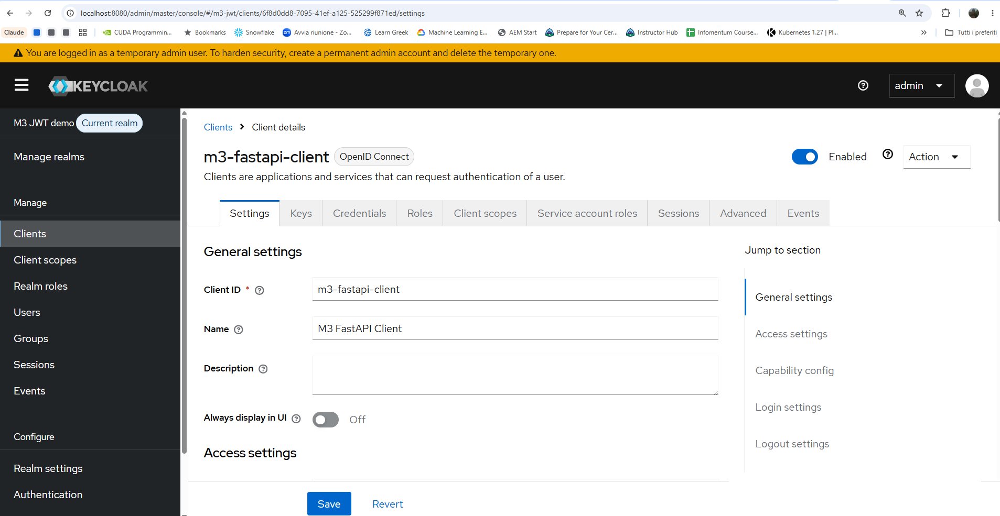
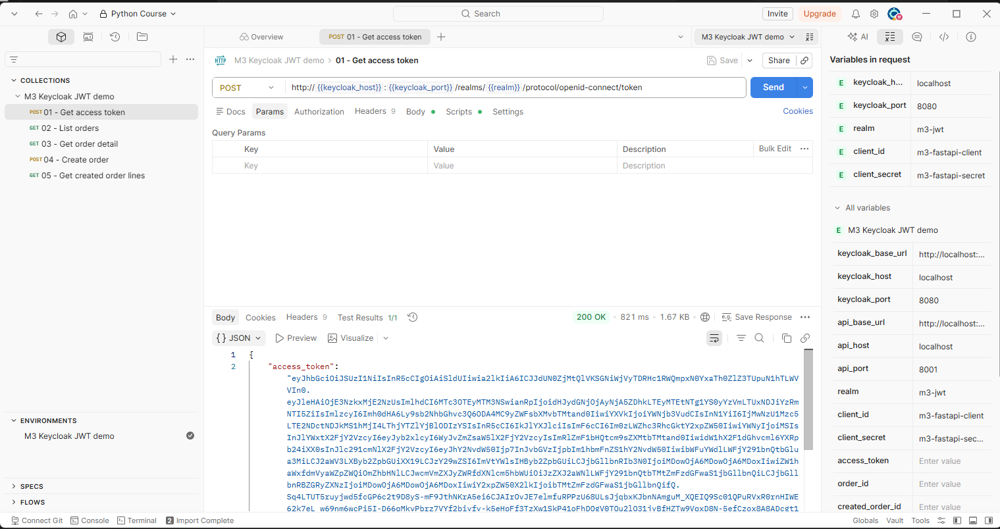
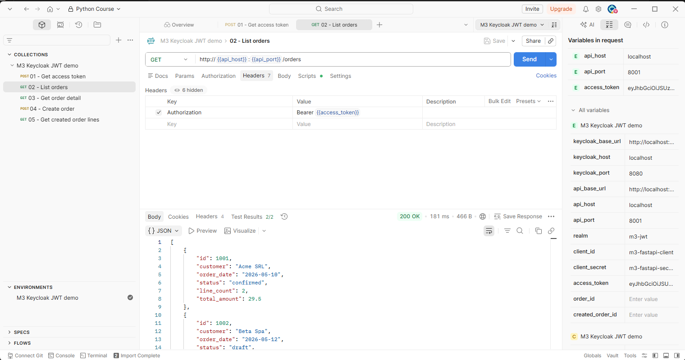
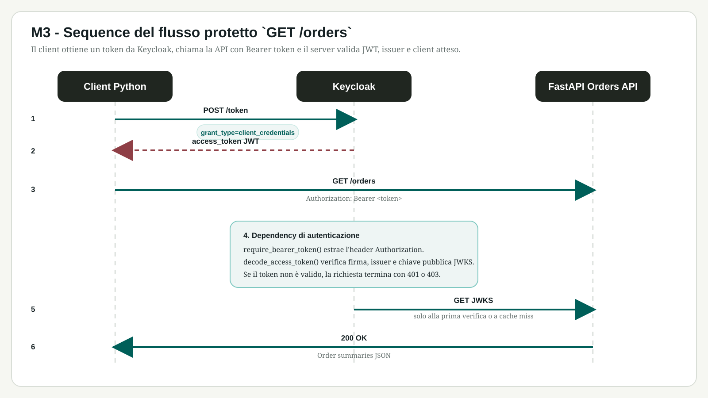

Obiettivi di apprendimento
- Spiegare cosa sono API e API REST.
- Riconoscere endpoint, risorse, request e response.
- Usare i metodi HTTP principali.
- Effettuare una request `GET` con `requests`.
- Trasformare JSON in dizionari e liste Python.
- Capire i type hints e i tipi Python usati da FastAPI.
- Riconoscere il ruolo di `async` / `await`, variabili di ambiente e ambienti virtuali.
Output atteso
Uno script che chiama un endpoint HTTP, verifica eventuali errori, legge la response JSON, ne estrae dati strutturati e si appoggia ai prerequisiti necessari per iniziare con FastAPI.
1. Concetti teorici
1.1 Cos'è un'API
Un'API è un'interfaccia che permette a sistemi software diversi di comunicare. Definisce quali operazioni sono disponibili, quali dati inviare e quale risposta aspettarsi.
1.2 API come interfaccia tra sistemi
Un'applicazione può usare un'API per ottenere dati, inviare ordini, aggiornare informazioni o integrare servizi senza conoscere i dettagli interni del sistema chiamato.
1.3 Perché si usano
Le API separano responsabilità, favoriscono integrazione tra servizi e permettono di riusare funzionalità già disponibili.
2. Introduzione alle API REST
2.1 Architettura REST
REST è uno stile architetturale per progettare servizi accessibili via HTTP. Le risorse sono identificate da URL e le operazioni sono espresse tramite metodi HTTP.
2.2 Concetti chiave
- Endpoint: URL che espone una funzionalità o una risorsa.
- Risorsa: entita gestita dal servizio, come utenti, ordini o prodotti.
- Request: richiesta inviata dal client al server.
- Response: risposta del server, con stato, header e corpo.
3. Metodi HTTP
3.1 GET
`GET` richiede dati senza modificare la risorsa sul server.
3.2 POST
`POST` invia dati per creare una nuova risorsa o avviare un'elaborazione.
3.3 PUT
`PUT` aggiorna o sostituisce una risorsa esistente secondo le regole dell'API.
3.4 DELETE
`DELETE` richiede la rimozione di una risorsa.
4. Formato JSON
4.1 Struttura
JSON rappresenta dati tramite oggetti, array, stringhe, numeri, booleani e valori nulli. È leggibile da umani e facilmente interpretabile dai programmi.
4.2 JSON e dizionari Python
Un oggetto JSON assomiglia a un dizionario Python, ma JSON è un formato testuale. Dopo il parsing, Python lo rappresenta con dizionari, liste e tipi nativi.
5. API e JSON con Python
5.1 Libreria requests
`requests` semplifica l'invio di richieste HTTP da Python e rende più leggibile il codice rispetto all'uso diretto di librerie a basso livello.
5.2 Request GET e lettura della response
import requests
url = "https://api.example.com/items"
response = requests.get(url, timeout=10)
print(response.status_code)
print(response.text)La response contiene il codice di stato, gli header e il corpo. Il codice di stato indica se la richiesta è riuscita o se si è verificato un errore.
6. Gestione del JSON
6.1 Parsing JSON
Quando la response contiene JSON, `response.json()` converte il testo in strutture Python, tipicamente dizionari e liste.
dati = response.json()
for item in dati["items"]:
print(item["name"])6.2 Accesso ai dati
L'accesso ai dati richiede di conoscere la forma della risposta: chiavi disponibili, liste annidate e possibili valori mancanti.
7. Errori, autenticazione e sicurezza
7.1 Gestione errori nelle chiamate API
Uno script robusto controlla timeout, errori di rete, codici di stato inattesi e JSON non valido.
7.2 Autenticazione API
Molte API richiedono credenziali, token o chiavi. Le credenziali non devono essere scritte direttamente nel codice sorgente condiviso.
7.3 Buone pratiche, limiti e sicurezza
- Impostare timeout espliciti.
- Gestire rate limit e risposte di errore.
- Validare i dati ricevuti prima di usarli.
- Proteggere token e chiavi di accesso.
8. Tipi Python per FastAPI
8.1 Type hints e annotazioni
Python supporta type hints, cioè annotazioni che dichiarano il tipo atteso di una variabile o di un parametro. In FastAPI questa base diventa centrale perché il framework usa gli stessi tipi per validare e documentare le API.
8.2 Tipi semplici
FastAPI parte dai tipi standard di Python, come `int`, `float`, `bool`, `bytes` e `str`, per descrivere in modo esplicito i dati attesi dagli endpoint.
8.3 Tipi generici
Le annotazioni possono descrivere anche strutture composte come liste, tuple, insiemi e dizionari. Questo rende più chiara la forma dei dati scambiati tra client e server.
8.4 Classi, Pydantic e valori opzionali
Le classi possono essere usate come tipi. FastAPI integra questo approccio con i modelli Pydantic, utili per validare strutture dati e dichiarare campi opzionali o `None` in modo controllato.
8.5 Tipi in FastAPI
Le annotazioni di tipo sono il meccanismo che permette a FastAPI di offrire supporto all'editor, controlli dei tipi e generazione automatica della documentazione degli endpoint.
9. Concorrenza e async / await
9.1 Codice asincrono
Il codice asincrono usa coroutine e sintassi `async` / `await` per gestire operazioni che aspettano risorse esterne senza bloccare inutilmente l'esecuzione.
9.2 Concorrenza
La concorrenza permette di gestire più attività in modo coordinato. Non significa per forza esecuzione parallela, ma una migliore organizzazione del tempo di attesa.
9.3 Quando serve in FastAPI
FastAPI usa `async` / `await` per gestire richieste, I/O e integrazioni con servizi esterni in modo efficiente, soprattutto quando le operazioni sono legate a rete o disco.
10. Variabili di ambiente
10.1 Creare e usare le variabili di ambiente
Le variabili di ambiente vivono fuori dal codice Python e sono utili per configurazione, segreti e parametri di esecuzione.
10.2 Leggere le variabili di ambiente in Python
In Python si leggono con gli strumenti del sistema operativo o con librerie dedicate, poi si convertono e validano secondo il tipo atteso.
10.3 Tipi e validazione
Le variabili di ambiente sono stringhe: il codice deve interpretarle in modo esplicito, ad esempio convertendo numeri, booleani o percorsi.
10.4 PATH
`PATH` indica al sistema operativo dove cercare i programmi da eseguire ed è fondamentale per capire perché un comando funziona in un terminale e non in un altro.
11. Ambienti virtuali
11.1 Creare un progetto
Un progetto Python dovrebbe avere una propria cartella di lavoro e un ambiente isolato per le dipendenze.
11.2 Creare e attivare un ambiente virtuale
Con `venv` o `uv` si crea un ambiente virtuale locale e poi lo si attiva per usare il Python del progetto, non quello globale del sistema.
11.3 Verifica, installazione ed esecuzione
Dopo l'attivazione si verifica il binario usato, si installano i pacchetti necessari e si esegue il programma nello stesso contesto isolato.
11.4 Perché servono
Gli ambienti virtuali evitano conflitti tra versioni di librerie e rendono riproducibili installazione, test e distribuzione del progetto.
Laboratorio guidato
Esercizio
Chiamare un endpoint pubblico di test, leggere la response JSON, estrarre alcuni campi e salvare un report testuale con i risultati principali.
Esempio più completo
Come sostituto attuale del vecchio esempio su usfundamentals, Alpha Vantage funziona bene per mostrare una API un po' più articolata: un endpoint per la scheda aziendale e uno per i dati finanziari. Qui sotto uso `OVERVIEW` per i dati societari e `INCOME_STATEMENT` per gli indicatori.
# Using a more complex API
company_overview_url = 'https://www.alphavantage.co/query?function=OVERVIEW&symbol=IBM&apikey=demo'
company_indicators_url = 'https://www.alphavantage.co/query?function=INCOME_STATEMENT&symbol=IBM&apikey=demo'
import requests
overview = requests.get(company_overview_url).json()
indicators = requests.get(company_indicators_url).json()
print(overview.get('Name'))
print(indicators.get('annualReports', [])[0].get('fiscalDateEnding'))Per il laboratorio e per il notebook collegato, questa combinazione resta molto utile: la risposta e JSON, i dati sono annidati e si vedono subito request, parsing e accesso a liste di report.
12. Notebook di supporto
I notebook collegano il modulo 3 alla pratica su dati e richieste HTTP, prima di entrare nel tutorial FastAPI vero e proprio.
-
Importing data with pandas
Esercizio utile per passare da file e sorgenti esterne a un DataFrame, con un ponte naturale verso il caricamento dei dati usati poi dalle API. -
REST request example
Esercizio diretto su una chiamata REST, utile per vedere request, response e parsing JSON in un notebook compatto. Se vuoi un sostituto attuale del vecchio esempio su usfundamentals, usa Alpha Vantage con `OVERVIEW` e `INCOME_STATEMENT`.
13. FastAPI tutorial
FastAPI entra come passo naturale dopo le basi REST: si parte dall'installazione, si definiscono le prime rotte e si aggiungono poi validazione, dipendenze e gestione degli errori. Quando il server è attivo, la specifica OpenAPI è esposta automaticamente all'URL `/openapi.json`, che si può aprire dal browser o scaricare per generare un client.
- Install FastAPI.
- First Steps.
- Path Parameters e Query Parameters.
- Request Body e JSON Compatible Encoder.
- Handling Errors e Response Model.
- Dependencies e Security.
13.1 Tour rapido della dashboard Keycloak
Nel laboratorio M3 conviene fare prima un giro essenziale della console di amministrazione di Keycloak, così è più facile collegare la teoria OAuth2 e JWT ai punti in cui si configurano davvero clienti, utenti e permessi.
- Realm: è il contenitore logico dell'ambiente. Nel demo usiamo il realm `m3-jwt` come spazio isolato di configurazione.
- Clients: qui si registrano le applicazioni che chiedono token a Keycloak. Nel nostro caso c'è il client `m3-fastapi-client` usato dal flusso `client_credentials`.
- Users: elenco degli utenti gestiti nel realm. Serve per capire come Keycloak separa identità umane e client applicativi.
- Roles: ruoli assegnabili a utenti o client, utili per modellare permessi e autorizzazioni.
- Sessions e Events: mostrano chi si è autenticato, quali sessioni sono attive e quali eventi di login o errore sono stati registrati.
- Realm settings: raccoglie configurazioni generali come login, token, sicurezza e comportamento del realm.

clientId e la sezione Credentials dove si legge il client secret usato dal demo.Nello screenshot il clientId è visibile nella scheda Settings; il client secret si trova invece nella scheda Credentials dello stesso client.
Il punto pratico è riconoscere dove si crea il client, dove si legge il secret, dove si controllano gli utenti e dove si verifica che il token emesso sia coerente con il realm e con l'applicazione prevista.
13.2 Esempio completo: Keycloak + JWT
Per un laboratorio separato dal tutorial base puoi usare l'esempio completo in examples/m3-keycloak-client-credentials. Include Keycloak avviato localmente dalla distribuzione ufficiale, un server FastAPI protetto da Bearer JWT, un client Python con flusso client_credentials, un notebook e una collezione Postman.
-
README dell'esempio
Panoramica del laboratorio, credenziali di default e istruzioni rapide. -
Notebook Keycloak JWT
Esecuzione step by step dello stesso flusso con celle Python e commenti didattici. -
Playbook Postman
Guida operativa per riprodurre il token flow e la chiamata al backend protetto.
13.3 Flusso OAuth2 e JWT
Il client non chiama direttamente l'API: prima ottiene un access token da Keycloak con client_credentials, poi lo invia nell'header Authorization: Bearer. Il backend FastAPI scarica le chiavi pubbliche del realm, verifica firma e issuer del JWT e accetta solo token emessi per il client atteso.

client_credentials: questo è il primo passo prima di chiamare la API Ordini protetta.
GET /orders: il token ottenuto prima viene inserito nell'header Authorization: Bearer.13.4 Sequence diagram del flusso protetto
Questo diagramma mostra il percorso completo di una richiesta a GET /orders: il client chiede il token a Keycloak, invia la richiesta con Bearer, il server valida il JWT e restituisce la lista delle testate ordine.

GET /orders: il client ottiene il token da Keycloak, chiama la API con Bearer e FastAPI valida JWT, issuer e client atteso prima di rispondere.14. Creare client da OAS
Quando esiste una definizione OpenAPI, un client Python può essere generato automaticamente invece di essere scritto a mano. Nel caso di FastAPI questo è comodo perché il JSON della specifica si prende direttamente dall'URL esposto dal server, senza passaggi intermedi.
14.1 OpenAPI e client generator
Il flusso tipico parte da `http://127.0.0.1:8000/openapi.json` o da un URL equivalente se l'app gira su un host diverso. Uno strumento come openapi-python-client legge quella specifica e crea un pacchetto Python con una classe client, modelli dati e funzioni per ogni endpoint.
14.2 Esempio minimo
# scarico la specifica direttamente dal server FastAPI
curl http://127.0.0.1:8000/openapi.json -o openapi.json
# genero il client
openapi-python-client generate --path openapi.json
# uso del client generato
from my_api_client import Client
from my_api_client.api.default import list_items
client = Client(base_url="https://api.example.com")
response = list_items.sync(client=client)
print(response)Il nome del pacchetto e delle funzioni dipende dallo spec e dai tag dell'API. L'idea importante è che la struttura del client deriva direttamente dalla OAS, con meno codice manuale e meno rischio di disallineamento.
14.3 Quando conviene
- Quando il backend espone una OpenAPI stabile.
- Quando serve un client tipizzato per test, script o integrazioni.
- Quando si vuole mostrare la relazione tra contratto API e codice Python generato.
Riepilogo
- Le API REST espongono risorse tramite endpoint e metodi HTTP.
- JSON è il formato più comune per scambiare dati strutturati.
- Python può chiamare API, convertire JSON e gestire errori con codice chiaro e controllato.
Sitografia
-
FastAPI - Python Types Intro
Tipi Python, type hints, tipi generici, modelli Pydantic e annotazioni usate come prerequisito per FastAPI. -
FastAPI - Concurrency and async / await
Concetti di codice asincrono, coroutine e uso di `async` / `await` nel contesto FastAPI. -
FastAPI - Environment Variables
Variabili di ambiente, `PATH` e uso della configurazione esterna rispetto al codice. -
FastAPI - Virtual Environments
Creazione, attivazione e uso di ambienti virtuali per isolare le dipendenze del progetto. -
FastAPI Tutorial - User Guide
Percorso ufficiale per installazione, prime route, parametri, body, errori, response model, dipendenze e sicurezza. -
`openapi-python-client`
Generatore Python per creare client moderni da documenti OpenAPI 3.0 e 3.1. -
Alpha Vantage - API Documentation
Documentazione ufficiale per gli endpoint `OVERVIEW` e `INCOME_STATEMENT`, utile come sostituto del vecchio esempio finanziario.